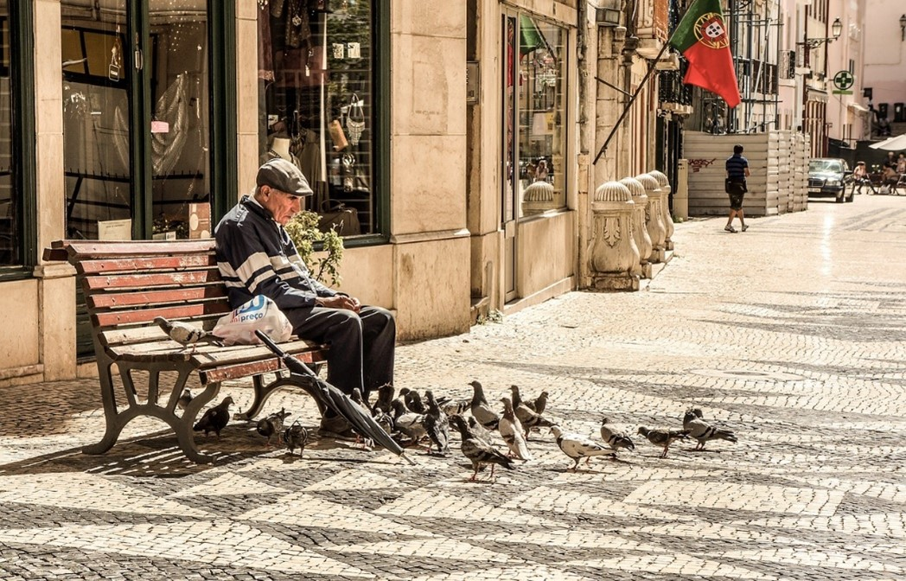

Ao longo dos anos, Portugal tem registado um aumento no que diz respeito ao envelhecimento demográfico do país e uma subida de jovens a saírem da sua nação. Este fator devesse essencialmente pela elevação dos preços das coisas e da falta de oportunidades. 
Como podemos observar no gráfico, Portugal encontra-se no top três no que diz respeito à média de idades mais alta, relação a estes países, tendo de média mais ou menos 47 anos. Juntando-se a Portugal, no top três também, temos a Itália, que lidera o gráfico com uma média de 51 anos de idade, e para fechar este top, encontra-se Espanha, com uma média de idades de 50 anos.Encontra partida, o país apresentado o gráfico com uma média mais baixa é a Hungria, com uma média de idades de 45 anos seguida da Finlândia com uma média de idades de 46 anos, depois a Bélgica com uma média de idades de 46 anos e por fim, temos a Dinamarca com uma média de 46.6 anos de idade.
Segundo o Jornal de Notícias, os distritos de Oleiros e Castelo Branco, Alcoutim (Faro) e Almeida (Guarda), são os municípios em Portugal onde se registam uma população envelhecida. No seu todo, os habitantes de Oleiros contam com 4.905 pessoas, sendo que 2.239 têm mais de 65 anos. Já Alcoutim, conta com 2.523 e dessas pessoas 1.199 ultrapassam os 65 anos.
Como nos diz o jornal Observador, o a faixa etária dos 65 anos ou mais foi o único em que o número de pessoas aumentou.
Na análise do segundo gráfico, notamos um aumento relevante desde o ano de 2017 a 2022. No ano de 2017, tínhamos um índice de percentagem de rácio de 155, 2. No ano de 2018 tínhamos de 160, 5, em 2019 tínhamos de 166, 3, em 2020 de 172, 5, em 2021 178, 4 e em 2022 tínhamos uma percentagem de rácio de 183, 5. Aqui conseguimos perceber que de ano em ano, o índice de envelhecimento tem aumentado gradualmente, o que leva a uma percentagem cada vez maior.
Segundo o portal do INE, relativamente aos censos, a população que habita em Portugal no total é de 10, 343, 066 pessoas sendo que desses indivíduos, o número maior por sexo corresponde às mulheres. Podemos comprovar no gráfico que, ao longo dos anos, o número de mulheres tem crescido em comparação ao número de homens, que por sua vez, tem ficado mais pequeno.
Em 1960 tínhamos 4.634.976 de mulheres e de homens tínhamos uma percentagem de 4.254.416, já neste período, as mulheres ganhavam em maioria e sempre foi assim até aos dias de hoje, como podemos notar no gráfico. Em todos os anos, a percentagem de mulheres sempre foi mais elevada do que das dos homens.
A vida está muito diferente daquela que se vivia há uns anos. Atualmente um jovem acabado de se Licenciar, não tem condições para suportar uma vida sozinho por falta de oportunidades. A qualidade de vida aumento tanto ao ponto de hoje termos uma população mais velha por cada vez mais termos nascimentos mais tarde. Os jovens estão mais cientes da emigração e das oportunidades que terão fora, do que as que terão dentro do próprio país.